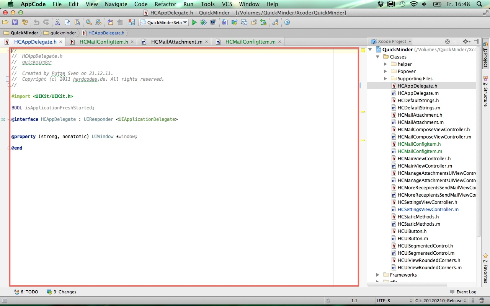

No filesystem needed?
Although I like using my iPad, the invisible is one major drawback. Thanks to Rene Ritchie I know that I am not alone at last.
The average user doesn't know about filesystem details and perhaps doesn't want to know but if you try to use a device like an iPad in a productive or even professional manner, you will come to the point where a filesystem is needed.
On a PC or Mac it is not uncommon to work on one file (or call it chunk of data if you don't care that it is actually a file) with more than one application, maybe because each has that single feature that is needed to make progress. Yes, apps can exchange files on iOS but it's crippled and there is no way to be sure that one app can give one received file back. The cloud could be the solution for this but every App developer has to reinvent the wheel if he/she wants to support iCloud and/or Dropbox and/or ...
One place outside the App sandbox where every app can read/write would be fine and just like iOS prevents the starting of unknown (AKA unsigned) apps it could ensure that nothing can be ever executed from this filesystem.
Would this be the Überfilesystem? ;-)
One-way globalization

You sure did hear about globalization, it's affecting all of us whether you live in Europe, the U.S. or any other place of the world. Thousands of jobs were downsized in one part of the world to be replaced by cheaper workers in another country. Resources are transported and distributed in all parts of the world to create and produce a product in the most cost effective way. Lower the cost and raise the profit. Probably the device you are reading this on was not produced, not even assembled the country you live in. This works quite well as long you don't try to globalize for yourself.
It started some years ago with regional lockout. This way the provider of digital content are in control where you can consume and what price you got to pay (different markets offer different prices).
Well, isn't that nice?
Reducing the costs is just fine as a producer but is a major no-no for you as a customer.
Don't get me wrong - the creators of content must be paid. No doubt about that. And there are many people in this world who are willing to pay. Hello? There are people who want to spend their money. But they can't!
If you live in the wrong place of this world you got no chance to get that digital content. Here in Germany all TV shows are synchronized so they will be aired much later than in the U.S. (most TV shows are still produced there). But I want to see the original version with native speakers. I don't need the synchronized version and guess what: I do not even watch it! Yes, there are some (not so legal) ways to stream right from the US (be it iTunes, Netflix, Hulu or Amazon). Dear content providers: don't blame piracy if you reject peoples money. You could learn from them. Why should I go through all that hassle when torrent is so much easier? Shouldn't the legal way be the easy one?
ITIL burger anyone?
Currently my girlfriend and I are lying on the sofa after we had an accidential meal: spaghetti with salmon, spinach and onions. It didn't turn out as expected but was delicious after all. Yeah, that actually happens if you really cook for yourself. That reminded me of Big Macs vs. The Naked Chef. No, I would not call me a chef but the self created food is by far better than from Mc Donald's. Any fast-food chain like Mc Donald's has a pedantic set of rules and methodologies that ensure the same customer experience in any branch at any place in the world. It does not matter if you order your Bic Mac in New York, Rio or Tokyo. It will taste exactly the same. They call this quality which is newspeak for average food made by morons.

Suddenly it struck me that the same goes for ITIL (Information Technology Infrastructure Library).
"The Information Technology Infrastructure Library (ITIL), is a set of practices for IT service management (ITSM) that focuses on aligning IT services with the needs of business.[...]ITIL describes procedures, tasks and checklists that are not organization-specific, used by an organization for establishing a minimum level of competency."
Have you ever called a service line to get support for your computer or any other technical device? Those call center agents use a flow chart to classify your problem and hopefully direct you to a competent person that can solve it for you. But there are these (not so rare) moments where your problem does not fit in. They have no flow chart, no rule to follow and you can feel the blue screen of death that paralyses the lubricated service machine (metaphorically spoken). Eventually they will keep you in the "keep the customer busy" routine hoping that the problem solves itself or that you give up.
And companies that implemented ITIL have brought the rules to perfection even more if they follow(ed) the ITIL rules by the letter not considering if those rules apply to their business or the culture of their product/customers. Here we go again: there is a set of rules that guarantee a "high" level of quality of service (vide supra) brought to you by a bunch of stupid morons. ITIL is not a bad thing at all, don't get me wrong but it is often implemented by people who are somehow fixated on the process of implementing itself that they loose sight for the big picture.
Now if you buy service from an ITIL compliant company ask yourself if you really want the average? Is that what you pay for?
I need space
There is this fruity company from Cupertino, giving a development environment to the people, called Xcode. It's free (as in free beer not as in free speech). It's buggy (sorry to say that - but it really is) and I often wonder if any of the people at Apple HQ ever tried to use it on a Macbook pro 13"?
As of today it is still buyable hardware on their store, so they should have tried it. What I am ranting about is this:

Now compare this to AppCode:

You get the difference, don't you?
Yes, I could use those buttons in the upper right corner to get more space in the editor. And ten seconds after that I may need the left or right pane again, move the mouse pointer all the way up and change it back. Then I need more space...
And for the clever ones mumbling something like keyboard shortcut: have you ever tried those on a German keyboard? Vulcans may like that, I do not!
Yes, it's a blog.
Sometimes I feel the urgent need to compensate frustrating hours of coding, reading API documentation or cursing on artificial limits of a given platform from a sacrosanct manufacturer occupying a zombie staff with a paranoid personality disorder diagnosis.
Instead of telling it to the hand I'll come here and flip the bird on them (verbally).
Maybe.
Or maybe I'm just holding it wrong ;-)
The content was once served via Apache/PHP/textpattern, now it's simply created with mdBook.